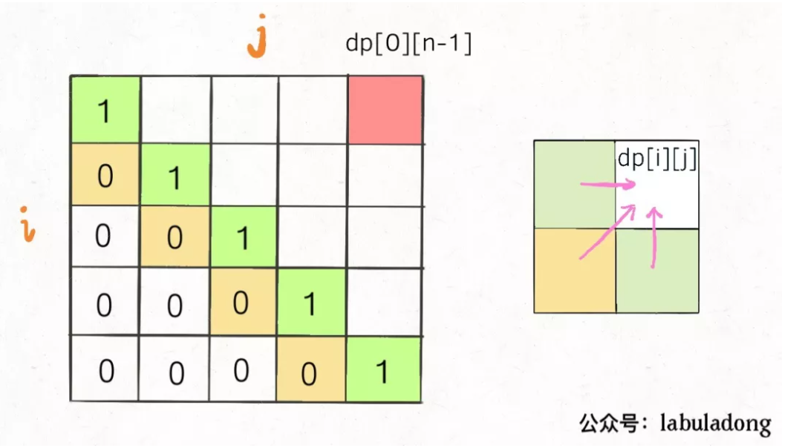
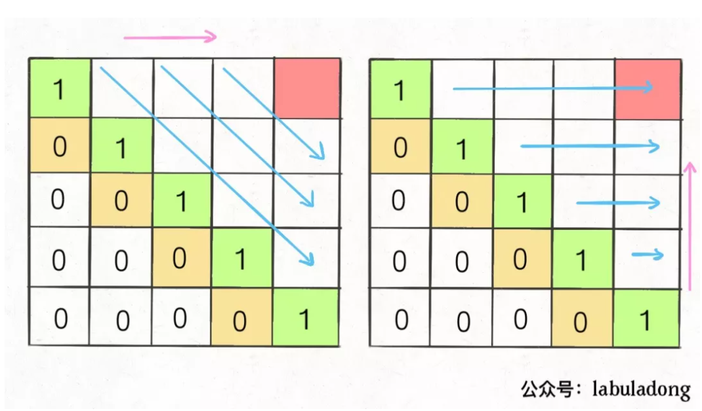
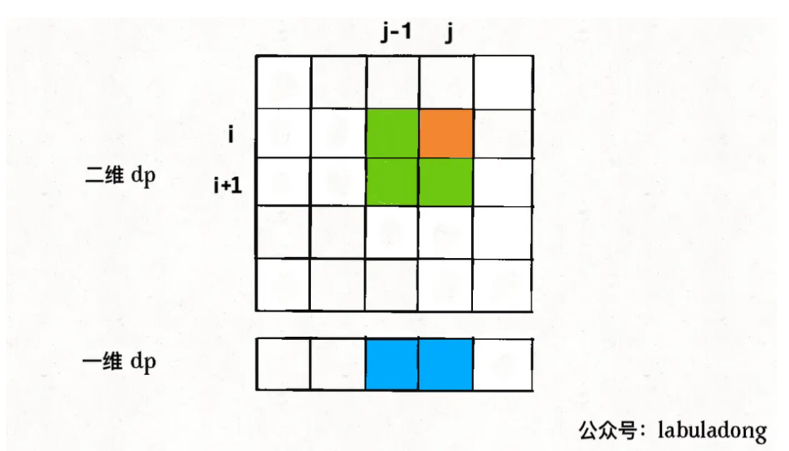
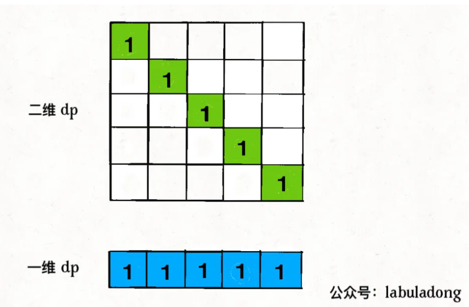

子序列问题相对于子串，子数组会难一些。字串要求是连续的，而子序列不要求。字串问题一般使用双指针，滑动窗口来求解，而子序列一般需要用动态规划求解。
子序列问题一般就是求一个最长子序列，最短子序列就是一个字符没啥可求的。一个串的子序列数量是指数级的，而动态规划往往可以压缩到时间复杂度为O(N^2)
labuladong总结的子序列问题的两种思路。
一维dp数组
这种常见的是求最长递增子序列
int n = array.length;
int[] dp = new int[n];
for (int i = 1; i < n; i++) {
for (int j = 0; j < i; j++) {
dp[i] = 最值(dp[i], dp[j] + ...);
}
}dp数组的定义是, 在子数组array[0..i]中，以array[i]结尾的目标子序列(最长递增子序列)的长度为dp[i]。
- 最长递增子序列
算法时间复杂度O(N^2)vector<int> dp(n, 1); for (int i = 1; i < n; i++) { for (int j = 0; j < i; j++){ if (s[i] > s[i-1]) dp[i] = max(dp[i], dp[j] + 1); } }
这种思路来自于归纳法。
二维dp数组
这种思路用的多一些。
int n = arr.length;
int[][] dp = new dp[n][n];
for (int i = 0; i < n; i++) {
for (int j = 1; j < n; j++) {
if (arr[i] == arr[j])
dp[i][j] = dp[i][j] + ...
else
dp[i][j] = 最值(...)
}
}涉及到两个字符串/数组时, (比如最长公共子序列), dp数组含义。在子数组
arr1[0..i]和子数组arr2[0..j]中, 我们要求的子序列(最长公共子序列)长度为dp[i][j]只涉及一个字符串/数组时, dp数组含义。在子数组
array[i..j]中, 我们要求的子序列(最长回文子序列)为dp[i][j]。
最长回文子串
寻找回文串的核心思想是: 从中间字符开始向两边扩散来判断回文串。
for 0 <= i < len(s):
找到以s[i]为中心的回文串
更新答案但由于回文串长度可能是奇数也可能是偶数, 因此
for 0 <= i < len(s):
找到以s[i]为中心的回文串
找到以s[i]和s[i+1]为中心的回文串
更新答案代码
/// 寻找回文串的函数
string palindrome(string& s, int l, int r) {
// 传递两个指针
// 满足情况向两侧扩散
while (l >= 0 && r < s.size() && s[l] == s[r]>) {
l--;
r++;
}
// 返回以s[l] 和s[r]为中心的最长回文串
// 不含边界
return s.substr(l+1, r-l-1);
}
string longestPalindrome(string s) {
string res;
for (int i = 0; i < s.size(); i++) {
// 以s[i]为中心的最长回文字符串
string s1 = palindrome(s, i, i);
// 以s[i], s[i+1]为中心的最长回文字符串
string s2 = palindrome(s, i, i+1);
res = res.size() > s1.size() ? res:s1;
res =res.size() > s2.size() ? res: s2;
}
return res;
}最长回文子序列
对二维dp数组定义, 字串s[i..j]中, 最长回文子序列的长度为dp[i][j]。
if (s[i] == s[j])
dp[i][j] = dp[i+1][j-1] + 2;
else
dp[i][j] = max(dp[i+1][j], dp[i][j-1])
dp[0][n-1]就是整个s的最长回文子序列的长度。
想求dp[i][j]需要知道dp[i+1][j-1], dp[i+1][j], dp[i][j-1],

保证每次计算dp[i][j], 左, 下, 左下三个方向位置已经计算出来，只能横着或者反着遍历。

反着遍历
int longestPalindromeSubseq(string s){
int n = s.size();
// dp数组初始化
vector<vector<int>> dp(n, vector<int>(n, 0));
//base case
for (int i = 0; i < n; i++) {
dp[i][i] = 1;
}
// 反着遍历
for (int i = n-1; i >=0; i--) {
for (int j = i+1; j < n; j++) {
if (s[i] == s[j])
dp[i][j] = dp[i+1][j-1] + 2;
else
dp[i][j] = max(dp[i+1][j], dp[i][j-1])
}
}
}找到状态转移和base case之后，一定观察DP table, 看看怎样遍历的。
状态压缩
动态规划的状态压缩, 一般能将空间复杂度由O(N^2)降低到O(N)。能够使用状态压缩技巧的动态规划都是二维dp问题, 如果状态转移, 计算dp[i][j]需要的都是dp[i][j]相邻的状态，那么就可以使用状态压缩技巧，将二维dp数组转化成一维，空间复杂度由O(N^2)降低到O(N)。
例如最长回文子序列, 计算dp[i][j]需要三组相邻状态
一般的，状态压缩是去掉i这个维度, 也就是像j轴方向投影。
dp[j]赋新值之前，dp[j]的值为外层循环上一次迭代的值，即对应dp[i+1][j]的位置。dp[j-1]的值为内层for循环上一次迭代的值，也就是dp[i][j-1].
for (int i = n-1; i >=0; i--) {
for (int j = i+1; j < n; j++) {
if (s[i] == s[j])
// dp[i][j] = dp[i+1][j-1] + 2;
dp[j] = ?? +2;
else
// dp[i][j] = max(dp[i+1][j], dp[i][j-1])
dp[j] = max(dp[j], dp[j-1]);
}
}注意??处, dp[i+1][j-1]并没有在dp[]表示中。这里实现十分巧妙
for (int i = n-1; i >=0; i--) {
int pre = 0;
for (int j = i+1; j < n; j++) {
// dp[j] 表示dp[i+1][j]
int temp = dp[j];
if (s[i] == s[j])
// dp[i][j] = dp[i+1][j-1] + 2;
dp[j] = pre +2;
else
// dp[i][j] = max(dp[i+1][j], dp[i][j-1])
dp[j] = max(dp[j], dp[j-1]);
// 下一轮, pre就表示dp[i+1][j-1]了， 即上一轮的dp[j]
pre = temp;
}
}- 将状态压缩理解成向i轴的投影。

从投影中显然看出, 由于求解方向是i轴向上, j轴向右。在求dp[j]时, dp[j]表示dp[i+1][j], dp[j-1]表示dp[i][j-1], 而dp[i+1][j-1]被覆盖了。但dp[i+1][j-1]实际是上一轮的dp[j]。

int longestPalindromeSubseq(string s) {
int n = s.size();
// base case：一维 dp 数组全部初始化为 1
vector<int> dp(n, 1);
for (int i = n - 2; i >= 0; i--) {
int pre = 0;
for (int j = i + 1; j < n; j++) {
int temp = dp[j];
// 状态转移方程
if (s[i] == s[j])
dp[j] = pre + 2;
else
dp[j] = max(dp[j], dp[j - 1]);
pre = temp;
}
}
return dp[n - 1];
}最长公共子序列
我们可以使用上文最长回文子串的逻辑，以及状态压缩
class Solution {
public:
int longestCommonSubsequence(string s1, string s2) {
int n1 = s1.size();
int n2 = s2.size();
vector<vector<int>> dp (n1+1, vector<int>(n2+1, 0));
for (int i = 1; i <= n1; i ++) {
for (int j = 1; j <= n2; j++) {
if (s1[i-1] == s2[j-1])
dp[i][j] = dp[i-1][j-1] + 1;
else
dp[i][j] = max(dp[i][j-1], dp[i-1][j]);
}
}
return dp[n1][n2];
}
// 状态压缩
int longestCommonSubsequence_reduce(string s1, string s2) {
int n1 = s1.size();
int n2 = s2.size();
vector<int> dp (n2+1, 0);
for (int i = 1; i <= n1; i ++) {
int pre = 0;
// pre存储dp[i-1][j-1]
for (int j = 1; j <= n2; j++) {
int temp = dp[j];
if (s1[i-1] == s2[j-1])
dp[j] = pre + 1;
else
dp[j] = max(dp[j-1], dp[j]);
pre = temp;
}
}
return dp[n2];
}
};
俄罗斯套娃信封问题
给你一个二维整数数组 envelopes ，其中 envelopes[i] = [wi, hi] ，表示第 i 个信封的宽度和高度。
当另一个信封的宽度和高度都比这个信封大的时候，这个信封就可以放进另一个信封里，如同俄罗斯套娃一样。
请计算 最多能有多少个 信封能组成一组“俄罗斯套娃”信封（即可以把一个信封放到另一个信封里面）。
思路是，先按照a[0]从小到大, a[1]从大到小排序。之后对a[1]求最长递增子序列即可。
class Solution {
public:
int maxEnvelopes(vector<vector<int>>& envelopes) {
sort (envelopes.begin(), envelopes.end(), [](const auto& a, const auto& b) {
return a[0] < b[0] || (a[0] == b[0] && a[1] > b[1]);
});
/// 最长上升子序列
int n = envelopes.size();
vector<int> dp(n, 1);
for (int i = 1; i < n; ++i) {
for (int j = 0; j < i; ++j) {
if (envelopes[j][1] < envelopes[i][1]) {
dp[i] = max(dp[i], dp[j] + 1);
}
}
}
int max_increase_length = 0;
for (int i = 0; i < n; i++)
if (dp[i] > max_increase_length)
max_increase_length = dp[i];
return max_increase_length;
}
};递归和备忘录的解法
我们考虑递归和备忘录的解法
int dp(string s1, int i, string s2, int j) {
if (s1[i] == s2[j])
return 1+dp(s1, i+1, s2, j+1);
else
// 两种情况, s1[i]在LCS中或s2[j]在LCS中
return max (
dp(s1, i+1, s2, j),
dp (s1, i, s2, j+1)
)
}使用备忘录优化
int longestCommonSubsequence (string s1, string s2) {
int m = s1.size();
int n = s2.size();
vector<vector<int>> memo(m, vector<int>(n, -1));
return dp(s1, 0, s2, 0, mono)
}
// 自顶向下的备忘录方法
int dp(string s1, int i, string s2, int j, vector<vector<int>> memo) {
if (i == s1.size() || j == s2.size())
return 0;
if (mono[i][j] != -1)
return mono[i][j];
if (s1[i] == s2[j])
mono[i][j] = 1+dp(s1, i+1, s2, j+1);
else
// 两种情况, s1[i]在LCS中或s2[j]在LCS中
mono[i][j] = max (
dp(s1, i+1, s2, j),
dp (s1, i, s2, j+1)
)
return mono[i][j];
}
// 自底向上的解法
int longestCommonSubsequence(string s1, string s2) {
int n1 = s1.size();
int n2 = s2.size();
vector<vector<int>> dp (n1+1, vector<int>(n2+1, 0));
for (int i = 1; i <= n1; i ++) {
for (int j = 1; j <= n2; j++) {
if (s1[i-1] == s2[j-1])
dp[i][j] = dp[i-1][j-1] + 1;
else
dp[i][j] = max(dp[i][j-1], dp[i-1][j]);
}
}
return dp[n1][n2];
}